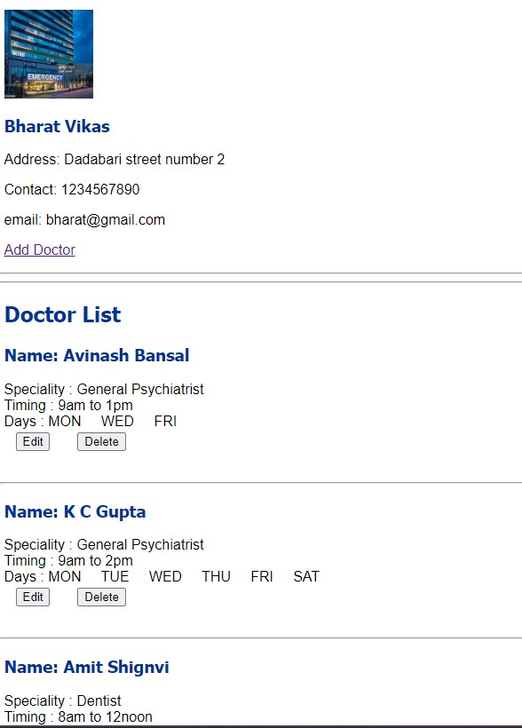

DoctorFinder Project Overview
This project is a web-based platform that allows users to find doctors in available hospitals and check their availability in real-time. It aims to streamline the process of locating medical professionals and ensuring patients can book appointments efficiently.
Key Features:
- Search Doctors:
- Users can search for doctors based on specialization, hospital.
- View profiles, including qualifications, specialties, and consultation fees.
- Can check the availability of doctor before visit.
-
Check Doctor Availability:
- Real-time availability of doctors across different hospitals..
- Users can check doctor schedules, including available consultation times..
- Option to view upcoming slots for each doctor and book appointments by call.
-
Hospital Management:
- Hospitals can update the availability of doctors, manage schedules, and notify patients of changes in real-time.
- View and manage appointment bookings for doctors within their facility.
Technology Stack:
- Frontend:HTML, CSS, JS, Bootstrap
- Backend:Flask Python frameword, SQL Database
Sample Images
All Registered Hospitals
Admin Block

Hospital Doctor Management page
Doctor Serch by their specializations

Search Result